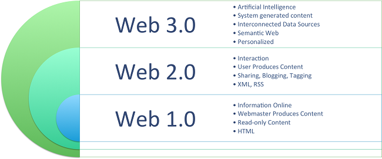
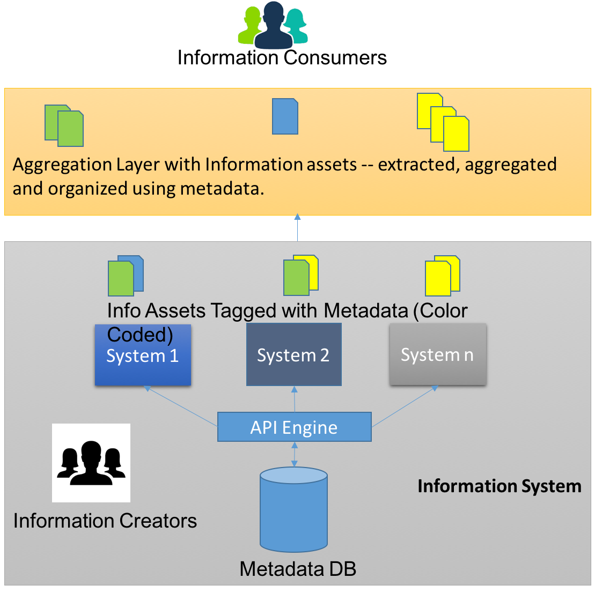
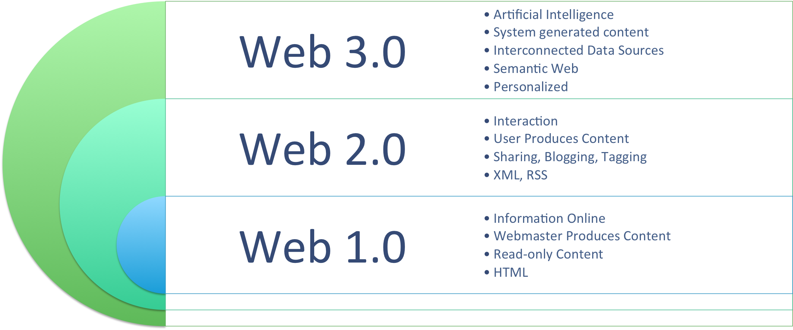
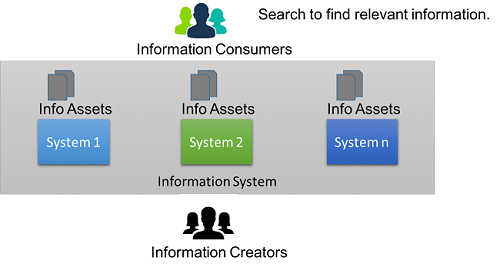
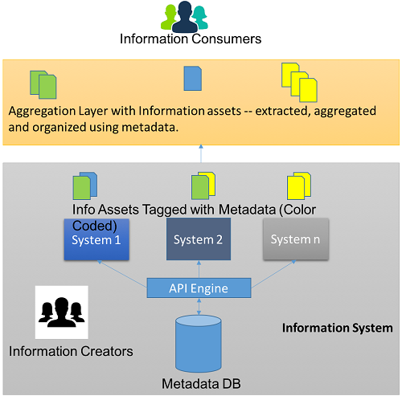

Contextual information: Automated content curation using metadata
Sesi Bhushan Somarouthu
In this era of information overload, how to automatically deliver contextually relevant information? 
In this era of social media explosion and information overload, how do you deliver contextually relevant information in an automatic manner?
Do you know, more than 700 million pieces of mail are delivered by the United States Postal Service each delivery day. Here is how United States Postal Service works:
- The sender drops the letter in a post box.
- A postal carrier collects the letter from post box and takes it to mail processing unit.
- Postal workers send the letter through a machine to separate the mail by shape.
- A machine orients the letters such that all addresses face the same way and are right side up.
- The address is scanned by an optical reader and a unique barcode is printed on the letter.
- Letters are then aggregated by their ZIP code and dropped into the ZIP code bins.
- The Letters are transported to destination based on ZIP code.
- The destination post office sorts letters and delivers them to the specified address.
How is this story relevant to our context? In this entire process, the ZIP code, together with the address barcode, is the key data to ensure correct transport of mail from sender to receiver. Machines separate, aggregate, and deliver letters to the right person by using the ZIP code and address barcode, which are the metadata for the letters.
Let's apply this analogy to information and see how we can automatically deliver contextually relevant information from creator to consumer.
Why information curation and aggregation?
Here is how the web has evolved over the last 15 years; today, we are in Web 2.0 and transitioning towards Web 3.0.

With Web 2.0 at its peak today, there is information overload. How do you find information that is relevant to you? You might say Search is an answer. Well, how does search find that information if the information is not tagged with correct metadata? Coming back to the mail analogy, the machine will fail to identify the destination address if the ZIP code is not specified. This is a case of missing metadata. This is the case with tons of information on the web and within organizations. Machines need metadata to understand the context of an information piece, and if there is no metadata, information needs to be curated by people. In the absence of metadata, information curation and aggregation will become a full-time job, unless this task is automated.
Metadata
What is metadata? Metadata is data about data. Correct use of metadata can simplify information organisation and delivery.
At a worldwide web level, there is absolutely no control whatsoever on information organisation and metadata usage. Google uses data mining and extraction algorithms, and textual parsing techniques to curate and offer contextual information. There are still some challenges with this approach. Consider the following example:
 
The example on the left is an incorrect translation of "mercury planet" into Telugu - it is a literal translation of the two words "mercury" (chemical mercury) and "planet". However, if the words are interchanged, the correct translation is offered (example on the right). It is evident to a human that the context is geography, not chemistry, but this context is not so evident to a machine.
At the organisational level, there can be multiple functional groups creating various information assets with no or little metadata. When this is the case, there is control over information flow. However, if metadata is applied thoughtfully, the content can be organised and tagged, making it much easier to surface relevant and correct information to a consumer.
Automated curation for contextual information
Traditionally, consumers use Search to find information from various information assets. The following picture illustrates how traditional information systems work, where information is created by various creators using multiple systems and where information consumers end up with non-relevant information.

Automated curation is easy to drive when you have right contextual metadata. Here is the process to accomplish this:
- Define contexts that are relevant for the consumer.
- Based on the context, define a metadata framework to use across the organisation. This metadata framework must be devised from the perspective of the information consumer.
- Store metadata in a central repository for the entire organisation to leverage.
- Open metadata APIs for the various systems to leverage.
- Enforce metadata tagging while creating information assessments, both structured and unstructured.
- Store the relationship between metadata and information in a central repository.
- Once the relationship is established, identify use cases for consumers.
- Convert use cases into database queries, for extraction and aggregation.
- Deliver the information assets to consumers by organising the information by context.
The following picture illustrate how the automated system works.

Using automated curation, information is created, tagged, extracted, aggregated, and organised in a way that is relevant to the consumer.
Metadata management and automated curation is easier to implement at an organisation level; it is less complex in nature when compared to worldwide web.
Related
Sesi owns Juniper Pathfinder: http://pathfinder.juniper.net/. It is an example implementtaion of automated content curation by extracting and aggregating information using product metadata from various sites on juniper.net.